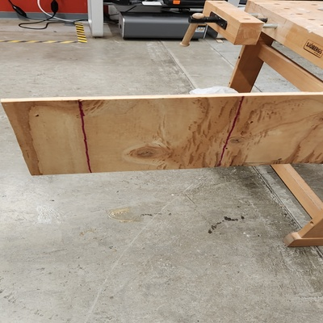
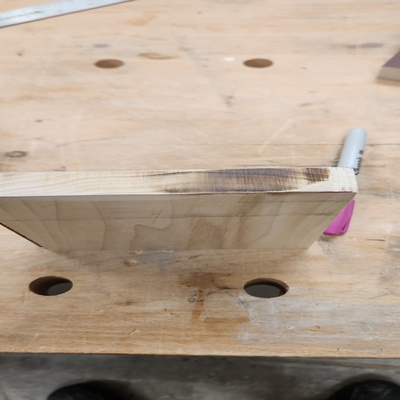
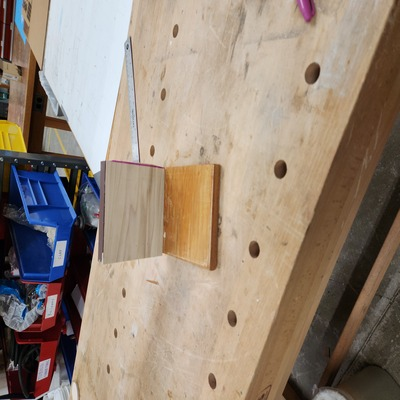
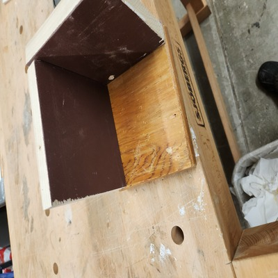

<br>
#### Week 3: Hand Tools
<p>
This week I started to learn about using hand tools and I had to make a kinetic sculpture
</p>
<br>
<p><storng>The idea</strong></p>
<br>
<p>
I wanted to make a box with a door that could move I decided to make the box out of wood and the door out of cardboard
I wanted to turn rotational motion into linear motion I decided I would due this with a dowl and a lasercut circle to act as a cam. The dowl would be attatched to the cam and the rotation would cause the dowl to move the dowl would be attatched to the door and the door would slide along a rail in the box allowing the door to open
</p>
<br>
<p><storng>The problems</strong></p>
<br>
<p>
Making the Box was much harder than I thought it wouldbe. I tried using a pull saw, however, I kept coming across the problem of making uneven cuts it is much harder to make a box with hand tools thanI thought because, A box needs to have accurate dimensions wich is hard with hand tools due to user error. I used the band saw and that made it a bit better however I was still having problems.
I was not able to finish this weeks assignment, however, I have atatched images of what I got done below I finished most of the box which took 3 hours due to me having to recut the wood several times due to uneven cuts
</p>
<br>
<p>Below is pictures of my progress. In the future when maing this I wuld use a cnc machine which would make much better cuts and allow for the correct dimensions with little error which is needed for a box. fuurthermore, I learned that I have to keep praciticng my skills with handtools until I get better at using them so that is a mjaor take away I learned for this assignemnt. I also learned that for this class I need to learn to budget time accordilig for projects and make projects to scale for the amount of time we have.</p>



